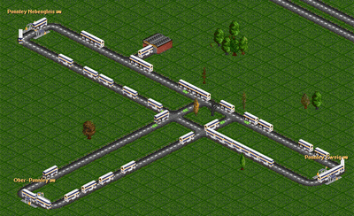
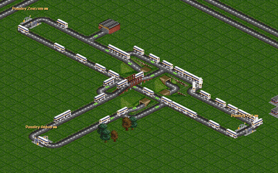

Busses, Highways and the common Bus Driver
Today planetmaker and I did a nice test game to prepare for another competition against NoAI opponents. Of course we are interested in a real comparable competition and want, therefore, only build road vehicles. A wise preparation is necessary, otherwise we might get a nasty surprise.
We tested the behavior of road vehicles, intersections and bus stops.

We decided to create a similar setup to the one we used yesterday. Instead of the monorail inter-city connection we used busses and a highway this time. Before you build a bigger bus station (lets say a station having more than two bus stops) you should be aware of the following (rough) facts:
- A bus station can consist of 16 bus stops only, not more.
- Drive-through road stops are not supporting the queueing features (finding the next empty stop). Busses will act strange if you use them: i.e. queueing up, ignoring other (free) drive-through stops and causing terribly jams.
- If you are using LV4, the best bus is `Leyland Olympian` and beyond 2020 the `Dolphin Intercity Bus` (vehicle details).
- Busses slowdown at curves.
Bus Stations
Planetmaker and I experimented a lot with several different layouts of bus stations. Unluckily we did not find an optimal and highly efficient station layout. This is caused by the facts that drive-through road stops cause the bus drivers to go crazy (driving infinite loops, stopping at stations and whatnot) and the standard bus stations are not heaving such a high throughput (joining and leaving takes too long). The layout shown above is probably the most effective so far (until devs develop better features). If a station is crowded all stops will be used, the busses hopefully don’t queue up and if something went wrong the backup loop can correct the mistake. For the better structure, the station follows the principles of RoRo-stations. You can test terminus style too, but don’t employe any drunken bus drivers. Thanks.
Highways
Its questionable whether highways must consist of two one-way roads or not. Since all the busses will have the same speed, it is highly unlikely that they will ever overtake. Though we used them for a better structure. In the beginning of the game I doubt thats its necessary. Building 200 tiles of road costs approximately 100.000$. The double amount could cause a time of struggling in the beginning. In my opinion it is much more important to build straight road. Avoiding too many curves is much better, because busses slow down heavily.
Intersections / Junctions
Again we experimented a lot. And came to the conclusion that it is not necessary to build difficult and complex junctions. Road vehicles are more flexible than trains, the no-clip mode is turned on and in most cases they pass an intersection really smoothly. Thinking competitive (maximizing the profit) it is better to build a simple junction, because:
- Its definitely cheaper
- Its definitely built faster
- Its as effective as complex junction

A Simple Crossing you should prefer.

The only case when more complex junctions are better is when eyecandy comes into play.

If you’ve read this article you are ready for the competition against NoAI. 🙂

Categories: Community News, Coopetition, OpenTTD, Tutorial
Ammler July 20, 2008 14:09
Maybe, you should take a look on our archive game: http://www.openttdcoop.org/wiki/PublicServer:Archive_-_Games_51_-_60#gameid_53
It is very old but there are working examples of drive through stations.
Edit, also a blog post about: http://blog.openttdcoop.org/2007/08/03/rails-who-needs-rails-a-new-kind-of-game-for-coopers/
XeryusTC July 20, 2008 14:16
I’ve made a proper working setup with drive through stations made in Public Server game #101, you can see it in the games screenshot. The station is able to handle around 80 local trams with ease and might be able to handle alot more.
It is setup like this:
Where | + – are normal roads (including junctions) and X is a drive through station. The trams picked both sides about equally without causing any major jams because every platform was about an equal distance away from their arival point. Also note that the entire station is bi-directional and trams could come in from both directions and they didn’t conflict with each other that much.
planetmaker July 20, 2008 14:22
XeryusTC, we tested exactly the layout you described – it somewhat comes naturally when thinking of RV stations :). Indeed it was the very first layout we built. It didn’t work at all with busses, causing huge queues and jams. We didn’t test with trams where you basically have no other choice.
XeryusTC July 20, 2008 15:14
I have been experimenting a bit with this layout and I noticed that it worked way better with a through lane (no stops) which is directly in line with the entry lanes. If you do build stops there it breaks quite bad. It might be true that it works better with trams though, I haven’t tested it with RVs but technically they’re the same (except that trams cant turn around everywhere, but that is not relevant here).
Yexo July 20, 2008 21:55
Nice to see you are preparing for a next match. However, there is one very important thing you obviously didn’t know: there is no way for AIs to detect and/or build one-way roads. This means that it’ll see one-way roads you build as normal roads, and tries to use them both ways. So if you only use them near your own stations, it might go ok, but the AIs might need some help so fix roads if some of them are one-way.
Nice article, it explains very well what you’ve tested and why different layouts work / don’t work. At least I don’t have to experiment myself for improvements in my AI.
Osai July 21, 2008 08:44
Yexo: I was aware of that. Thats why I bought the land surrounding the bus station. The AI should not be hampered by that.
Therefore I would propose only one road as a highway (as a normal road) and not two roads each one-way, because it might be destroyed by the AI anyway.